CarryOn：让长程 Agent 携带当前行动需要的原始证据
CarryOn: Learning What to Keep in Context for Long-Horizon LLM Agents 研究的是执行中上下文管理。一作 Lihuan Li 主要署名新南威尔士大学，合作机构为香港科技大学（广州）；作者还包括 Ruiyi Yang、Jiru Wang、Yifan Duan、Xiachong Lin、Hao Xue、Yang Song 和 Flora Salim。论文于北京时间2026年11月13日14:43首次提交，入口为arXiv:2611.17808。原文给出匿名项目入口，本轮访问返回403，代码完整性未核验，也没有独立复现实验。
上下文变短不一定让决策更好：摘要会遗漏以后行动所需的精确细节，而整段保留历史又会携带大量无关信息。长程任务需要同时保持简洁的进度状态，以及能随当前行动重新取回的细粒度原始证据。
1. 背景和问题
1.1 执行历史既是负担，也是下一步操作的依据
一个跨应用任务往往不是读完材料后回答一次问题，而是反复查找对象、检查条件、调用接口和核对结果。论文引言中的付款例子要求给每位同事转账，并在余额不足时充值。第一次读取通讯录得到的收款人标识，可能直到二十多步以后才真正进入转账参数。在此期间，代理可能检查余额、读取银行卡、修改支付设置，也可能修复格式错误。执行历史随之增长，每次大模型调用重复处理大量先前信息，但最早获得的少数字段仍然决定最终动作是否正确。
需要压缩的是每一步反复提交给执行者的工作上下文，而不是把唯一证据源永久销毁。 这一区别是本文最有迁移价值的出发点。最近若干步窗口只能保留时间邻近性，无法保证较早的联系人、预约记录或文件字段仍在；全文保留又会让短期噪声和重复观察挤占注意力。任务状态即使说清“已经找到七位同事”，也不能替代七个真实收款账号。若把状态与事实塞进同一段抽象摘要，模型可能在保留整体目标时丢掉执行必需的值。
长程工具任务还存在完成判据的细粒度差异。付款任务漏掉一位收款人、笔记复制遗漏原来的置顶属性、电子表格只填入近似时间，这些都可能让最终结果看似合理而未满足全部要求。单纯评价摘要是否语义相似，难以覆盖这些错误。CarryOn将结果评价交给原有基准的官方执行检查，把管理器的价值放到任务完成和资源消耗上观察。它并没有提出一套替代工具环境正确性的语言评分器，因此不能用更流畅的状态描述来弥补真实动作失败。
已有外部管理方法主要使用历史总结、Token剪枝或完整交互选择。总结把多个对象改写为更短文字，可能遗漏某些符合筛选条件的记录；剪枝在局部看来可以删除冗余字段，但之后的工具调用仍可能需要它；整步选择则把一次API返回当成不可分割单元，即使只需一个记录，也重复提交其他几十条记录。三种方法都在减少输入，但可用证据的粒度、重访能力与行动需求可能不匹配。论文不是把所有这些方法判为无效，而是明确比较它们在不同基准和Actor上的结果，并保留自身不占优的单元。
1.2 任务进度与证据内容承担不同职责
CarryOn将控制状态与证据分开组织。控制状态追踪已经完成的工作、剩余义务、下一步操作、是否需要返回具体值及已经查看过的接口；证据保留原始观察片段以及来源交互。前者适合简短、持续更新，后者适合按当前任务和最新观察动态取回。这里的“记忆”主要是当前任务的执行工作状态，并非跨用户会话不断积累的长期个人画像；原始归档也仍随任务增长，不能把短上下文等同于恒定总存储。
源链接在这里承担可追溯作用：同一片段保留来自哪次动作和观察，必要时可以重新访问。它并不自动证明观察是真的，也不验证状态里“已完成”的说法。工具执行失败、接口返回旧信息或Actor误解证据，仍会产生错误动作。论文所改进的是已获得证据到下一次行动上下文的交付路径，其余正确性条件依然存在。对于可能产生外部后果的任务，证据可访问与动作被授权同样是独立条件，选择器不会从相关性分数推导权限。
这套设计与推荐用户建模有相通的问题，但直接迁移需要谨慎。推荐历史中一次点击可能需要其内容语义、事件时间和反馈类型，而不是一条压缩后的兴趣标签；同时，跨事件的稳定偏好又不宜每次从完整日志重算。CarryOn提示可以分别存进度或状态与可回访事件证据。不过，本文只在文本工具任务上验证当前行动的证据选择，没有证明其选择器能直接优化推荐Recall或长期用户满意度，也没有处理推荐曝光造成的反馈选择偏差。
最值得检验的问题因而可以表述为：在不额外调用大模型写上下文摘要的条件下，一个小选择器能否让执行者以较少重复输入完成更多任务，同时在后续需求改变时重新找回早先遗漏的记录？ 这个目标比最大化压缩率更具体，也使失败成本进入比较：如果输入短只是因为任务提前失败，就不应被认为效率更好。本文同时构造成功优先的综合指标和每成功任务成本，正是为了避免把早停失败误判为低成本优势。
在研究问题上还要把“未来会用”与“现在能知道”分开。训练时作者可以从已经结束的轨迹里观察某条记录后来是否进入参数，这属于回溯标注；部署时选择器只能根据当前任务、最新观察与既有单元估计用途。如果把真实未来动作直接作为检索查询，评价就会泄漏答案；本文没有这样构造推理输入，而是学习从可见信息预测下一步需要什么。与此同时，这种监督仍只覆盖已有策略实际走过的路径。某条未被旧Actor使用的记录，可能恰好是另一个更好方案需要的证据，因此弱负例与真实无价值不能画等号。
论文对归档的使用也不同于把摘要当作唯一记忆。前一次没有选中某条银行卡记录，可能是因为正在找收款人；当任务转到余额充值时，相同记录的相关性就会变化。重新评分允许它回来，而不必再调用工具读取。但重新带回旧记录也有条件：内容仍然有效，来源可以定位，当前环境没有发生使其失效的状态变化。本文的基准轨迹提供相对受控环境，没有系统评估陈旧证据、相互冲突的观察和恶意工具返回。实际应用中需要把证据是否相关、是否新鲜、是否可信分别验证，相关性排序不能包办这三件事。
还有一项容易混淆的边界是任务完成与模型判断。AppWorld检查环境中实际对象，OfficeBench检查办公操作条件，Tau2使用其原有对话任务评价；它们都不是让CarryOn自己宣称任务已经完成。控制状态只是帮助执行，不是最终裁判。正因为这两层分开，案例中的遗漏字段才会被计为失败，而不会因为最终回复听起来正确就获得成功。对工程实验来说，这意味着应同时保存可执行检查与轨迹证据，避免只观察状态文本是否越来越简洁。
2. 方法
2.1 从历史归档形成带来源的证据单元
执行到第t步时，归档保存真实动作与公开观察，观察被拆成记录等较小单元。每个单元保留原始内容、来源交互引用和产生该观察的动作；本步未被选中的单元仍留在归档中。与直接删除历史的不可逆压缩不同，当前工作集只是原始档案的一个动态视图。对于同一观察中被选中的多个片段，产生它们的动作仅渲染一次，避免重复接口上下文。系统提示与工具定义也被一起放入Actor输入，而不属于可任意裁掉的历史片段。
符号解释：$X_t$为执行者本步输入，$q$为任务，$m_t$为当前紧凑控制状态，$W_t$为选中的较早证据，$R_t$为自动保留的近期交互，Compose还加入系统指令与工具定义。Actor联合产生动作与候选新状态，动作和其结果进入归档，新状态经检查后传给下一步。这使状态更新与原本就要进行的Actor调用共用一次生成，不需要另开一次大模型调用专门做记忆整理。联合生成仍然会多产生状态Token，其开销已经进入输入输出统计。
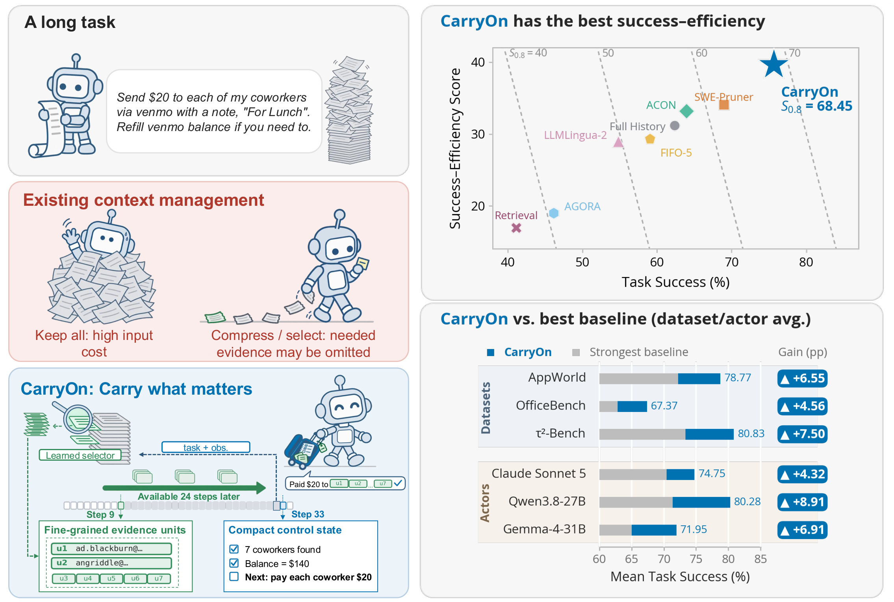
Figure 1是一幅原始综合概览，左上用跨步骤付款说明任务依赖，左中对照全部保留与压缩选择的不足，左下把紧凑状态和具体记录并列呈现。第九步取得的记录能在第三十三步继续支撑付款，关键并非记住“曾查到联系人”这一概括，而是能读到原始标识并把它用于动作。右上把成功率和成本折扣分数放在同一图中，右下分别按基准和Actor平均比较最强基线，都是聚合结果。右侧某个分组平均更好，不能推出这个分组里的每个模型、每个任务都更好；后文Table 1会保留Claude在Tau2上的反例。图中蓝色信息流只是作者对机制的示意，并未单独识别原始证据、状态、学习选择和预算放宽各自的净因果贡献。理解这幅图时，应把左侧作为任务缺口与设计动机，右侧作为待展开核验的汇总结果，而不是把卡通图本身视为可靠性的实验。
图右下按Actor求平均时，任务环境被合并；按任务环境求平均时，Actor被合并。两种切面可帮助发现总体趋势，但都不能替代逐单元检查，后文会把具体反例展开。
2.2 学习相关性、预测下一步使用并临时扩展
选择器用任务与最新公开观察为每个候选单元打两个分数。相关性用于在基础预算内排序，下一动作使用概率用于找出可能紧接着要用、但被基础工作集漏掉的证据。两者共享预训练骨干，采用不同指令，下一步使用头是学习的线性预测头。模型参数在任务执行时冻结，仍会在每个决策点重新评分；冻结参数不意味着每次取回固定的同一组证据。
符号解释：$u$为历史单元，$o_t$为最新观察，$\phi$为选择器参数，$r_t$为排序相关性，$g_\phi$输出下一步使用的原始分数，sigmoid函数$\sigma$把它映射为概率$p_t$。这里没有把未来观察喂进推理输入；未来使用仅在离线训练时产生标签。模型可能错误估计用途，因此阈值扩展是受训练分布限制的预测，而非精确预知未来行动。
符号解释：$B$为基础证据预算，$c$是渲染字符计数，$U_t$为近期窗口以外的候选，$P_t$按$r_t$排序、跳过放不下的单元后装入基础预算，$\tau$为扩展阈值，$D_t$为额外保留片段。默认基础预算16,384个字符，阈值0.5。它不是整个Actor输入的严格Token上限。 近期交互即便超出基础预算也保留，扩展还可能进一步超预算，系统指令、工具定义与状态另有开销。128的状态容量使用本地按词与标点计算的代理Token，也不能与16,384字符直接相加。
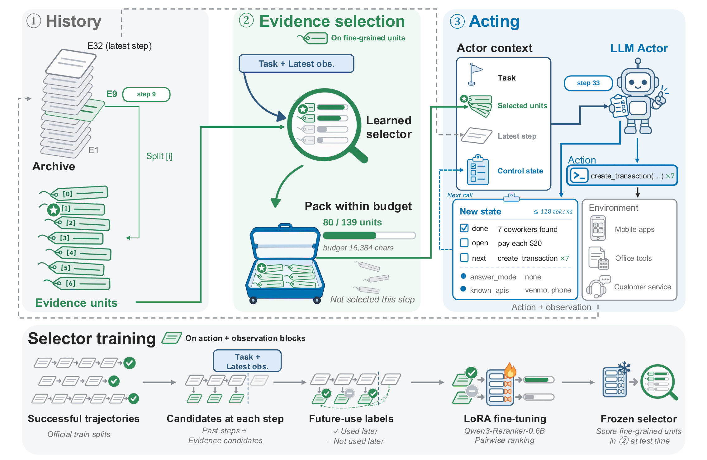
Figure 2上部从左到右展示推理闭环。左侧Archive保留第九步等早期事件，Split将一个观察拆为细粒度单元；中部选择器把任务与最新观察作为查询，依相关性装包，未选中部分仍能下次再取。右侧Actor读任务、选择证据、最新交互和控制状态，然后同时产生动作与不超过规定容量的新状态；动作执行返回公开观察，再进入档案。图里第九步找到同事，第三十三步执行多笔付款，说明进度描述与收款证据连接在同一次行动中。下部与上部不同，是离线训练链：成功轨迹产生候选块，标注引用和后续使用信号形成监督，经过LoRA微调得到冻结选择器。训练用完整动作观察块，测试却给拆分片段打分，这个粒度变化是需要实验支持的设计，而非无条件保证。图中80/139单元与预算说明打包的选择性，不能理解为所有任务固定选80条；图中状态更新与动作的两条箭头也不是两个独立Actor调用。整幅原图保留了子区域与所有箭头，体现从证据到状态再返回环境的连接。
框架中最关键的两条回路具有不同时间尺度。绿色回路可以在每一步改变证据工作集，让旧记录重新出现；蓝色回路把接受后的状态传给下一决策，维持尚未完成的义务。选择器不读隐藏用户模拟器状态，状态也不能把未执行的承诺登记成已完成。在付款例子中，“找到七个人”与“已付给七个人”分别属于不同进度，若混写，更多原始证据也不能自动纠正控制错误。图上的档案保留和状态接受规则一起决定系统行为，不能只实现一个检索头就声称复刻了完整方法。
2.3 携带控制状态行动，并按错误调整近期窗口
控制状态MEMORY包含五个字段：done记录完成事项，open记录剩余义务，next记录下一操作，answer_mode记录是否需要返回值，known_apis记录已检查接口。它追踪任务的控制面，账号、路径等具体值可以由证据供给。有效状态在容量范围内被接受，无法解析时保留旧状态。默认接受正常响应后保留最新一次交互；动作校验失败、状态无效或截断时，下一步扩展到最近两次，帮助恢复局部执行上下文。离开近期窗口的历史仍能进入学习选择，而不是永久丢失。
这种保底策略对证据选择很重要。仅按相关性从旧历史检索，可能错过刚发生的错误和需要立即修复的动作格式；无条件扩大近期窗口又会抵消压缩。作者把固定近期证据与较早学习选择分开，使错误恢复不完全依赖选择器。与此同时，状态中声明“已完成”仍可能不正确，最近观察必须支持它；协议中旧状态保留会带来过时计划风险，并非只要状态合法JSON就与环境一致。论文未引入独立事实核验器，最终对错由任务环境检查。
2.4 用后续证据使用训练选择器，扩展为本地Actor蒸馏
训练样本来自官方训练集成功轨迹。在中间决策边界，状态标注所引用的证据和后来动作使用的证据成为相关性正例，两种信号都没有的候选为弱负例；立即下一动作使用的证据构成第二头标签。AppWorld跟踪API参数值来源，OfficeBench匹配动作参数，Tau2使用后续公开交互复用信号。离线状态标注由Claude Sonnet 5生成，训练选择器为Qwen3-Reranker-0.6B。每个基准单独训练，再对该基准的三个Actor复用，不是一个跨环境通用模型。
符号解释：$r^+$与$r^-$是同一决策点正例、弱负例的相关性分数，$\gamma=0.2$是排序间隔，$y$标记证据是否在立即下一动作使用，$p$是使用预测。先用排序损失适配LoRA，随后联合排序与二分类更新适配器和新头。没有被用到的证据不一定没有用，因而弱负例会继承轨迹策略偏差；只看成功轨迹也可能缺少错误恢复时需要的内容。完整块监督向细片段测试迁移的可行性，来自本文的实测，不能据损失形式证明。
在CarryOn-E扩展中，管理器保持不变，把27B执行者换成9B学生。先模仿成功教师轨迹的可见响应，再让学生执行训练任务，教师标注学生访问到的状态，包括失败轨迹所经过的上下文；数据聚合后继续微调，减少只模仿成功教师时的状态分布偏差。
符号解释：$v$是教师可见响应，包含状态更新和环境要求的动作格式，$L$为响应长度，$\theta$是学生LoRA参数；$\mathcal B_k$为第k轮学生访问上下文的教师标注，$\mathcal D_k$为累计数据。损失只计算响应Token，测试不需要教师在线改写。该扩展改变了Actor能力与离线训练成本，不能把9B结果与原始27B比较后将差异全归给上下文管理器，也不能把不新增在线管理调用理解为完全不花教师标注费用。
3. 实验结果
3.1 先固定任务成功与成本分母
实验使用AppWorld的168个test_normal任务、OfficeBench的95个ACON公开测试任务，以及Tau2 Telecom的40个官方测试任务，保留各自工具和官方成功条件。Actor为Claude Sonnet 5、Qwen3.8-27B与Gemma-4-31B；Tau2还带Haiku 4.5用户模拟器，Actor与选择器只能看公开交互，不能看模拟器私有状态。作者每个设定报告一次运行，没有多种子重复或任务成功差异的置信区间。基线包括Full History、FIFO-5、向量检索，以及LLMLingua-2、ACON、AGORA和SWE-Pruner，分别保留其上下文构造设计。
符号解释：$s$是成功任务数，$N$为全部评价任务，$\bar T$和$\bar C$为所有任务的平均系统请求Token与Actor调用，$B_T$和$B_C$为同一任务集Full History对应均值。报告$\alpha=0.8$，让成功率占80%、成本折扣成功占20%。指标越大越好，但不是货币成本，也不是纯粹压缩率；改变权重会改变对成功和消耗的偏好。
符号解释：$C$和$T$累计所有任务的调用与系统请求Token，包括失败任务，FH表示完整历史基线，分母$s$是成功任务数。这个归一化每成功成本越小越好，Full History为1。不能只取成功轨迹的平均Token；早失败虽然花得少，却会减少成功分母。所有分数先在基准与Actor单元内计算，再对九个单元等权平均，不按任务数混成一个总成功率。系统请求Token含相关压缩/嵌入请求，Tau2还计用户模拟器；本地选择、剪枝模型处理的Token不计入，因此NCS不是端到端GPU算力或墙钟延迟。
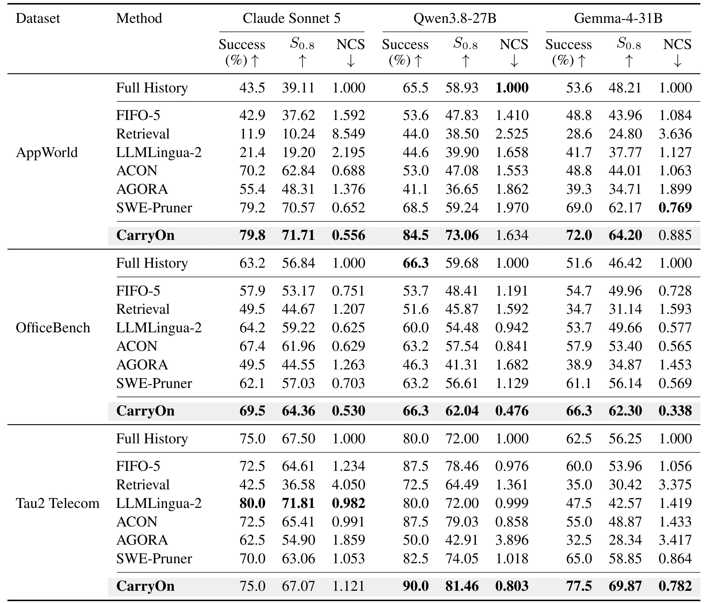
Table 1每个数据集内部列八种方法，三个Actor各有Success、$S_{0.8}$与NCS三列，读数必须在同一数据集和Actor中比较。CarryOn九单元宏平均成功75.7%，比总体最强基线SWE-Pruner高6.7个百分点，比Full History高13.3个百分点；平均$S_{0.8}$为68.45，NCS为0.792。这些是相对于特定聚合方式的总体结果，不是每个单元都获胜。AppWorld的Qwen成功从SWE-Pruner的68.5%升到84.5%，是16.0个百分点；但CarryOn的NCS1.634仍高于Full History的1，说明为了更多成功，它在这个单元每成功归一化资源更贵。Gemma在AppWorld的NCS0.885也不如SWE-Pruner的0.769。Tau2的Claude是最明确的成功率反例：CarryOn75.0%，LLMLingua-2为80.0%，而CarryOn的NCS1.121也劣于Full History。OfficeBench的Qwen两者成功同为66.3%，CarryOn将$S_{0.8}$从59.68升至62.04，NCS降到0.476，体现保持成功时减少重复处理。作者在九单元中成功率七次第一、一次并列，不能写成九次全胜。每个Tau2任务占2.5个百分点，一次运行相差两个任务就形成五个百分点，故小样本差值不应包装成稳定概率改善。
横向看同一基准的不同Actor还能看到收益依赖执行能力。AppWorld的Claude从Full History43.5%到CarryOn79.8%，Qwen从65.5%到84.5%，Gemma从53.6%到72.0%，增量各不相同；这不是选择器必须为每种Actor重训的结果，而是同一基准选择器迁移到不同执行者后的系统表现。OfficeBench三种Actor的NCS分别0.530、0.476、0.338，均低于完整历史，但其基线起点与任务成功不同，不能把0.338说成另一个Actor的三倍效率。均值0.792意味着按论文公式对九个归一化值平均后低于1，并非总账单精确减少20.8%，因为模型定价、本地选择计算和Token类型的实际单价没有进入这个定义。部署决策更适合先划定成功率底线，再在满足底线的同一Actor设定中比较真实资源。
每个Actor合计评价303个任务，但宏平均给三个环境各相同权重，四十任务的Tau2在均值中与168任务的AppWorld同权。若产品任务分布不同，必须重算匹配该分布的总体指标，不能直接把论文的75.7%当作实际用户成功概率。
3.2 调用更少与旧证据重用是两类证据
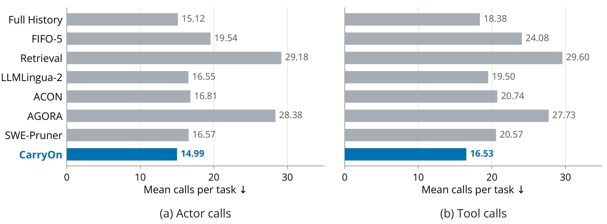
Figure 3横轴是每任务平均调用，左右分别为Actor和工具调用，九个基准与Actor单元等权汇总，失败任务也在其中。CarryOn平均Actor调用14.99，Full History15.12，差距较小；工具调用16.53对18.38，减少约10.1%。检索基线Actor调用29.18、工具调用29.60，明显更多，说明只缩短某次输入可能造成后续重复探索或恢复。两种调用不是同一个计数：一次Actor生成可能组织不同数量的工具动作，不能把工具次数当作大模型请求次数。柱图没有逐任务轨迹配对和置信区间，也没有提供wall time，因此它能支持本轮配置下调用路径较短，不能单独证明选择器计算加上归档检索之后端到端时延一定更低。结合Table 1看，CarryOn的较少平均调用并非仅因为任务提前终止，它同时有更高总体成功；但总体均值仍会掩盖Claude Tau2等负向单元，不能用平均柱图替代按场景部署判断。
若一个工具接口允许批量处理，单次调用还可能完成多条业务操作；图中没有把每次调用的工作量统一为相同单位。因此工具次数减少只能描述该基准接口下的执行路径，不是一般服务QPS或业务吞吐估计。与完整历史相比Actor调用几乎不变，也说明主要节省并非把大模型调用次数砍半，而是让输入与后续工具探索更有效。
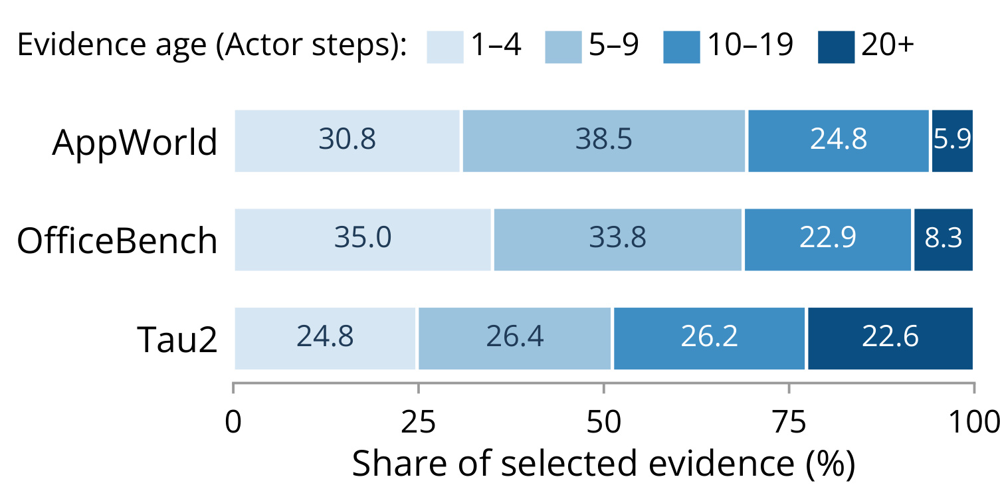
Figure 4横轴为所选证据事件占比，颜色按Actor步数分为1–4、5–9、10–19和20步以上，自动保留的近期证据被排除，统计的是学习选择的事件。AppWorld中至少十步旧的证据占24.8%加5.9%，即30.7%；OfficeBench为22.9%加8.3%，即31.2%；Tau2为26.2%加22.6%，即48.8%。这支持系统并非只选最近几步，而能从较早归档带回信息。它不表示30.7%的任务需要长期记忆，也不表示这些片段全部是任务成功的必要原因；同一证据反复选择会重复计数，年龄按Actor步而不是时间或Token。Tau2中二十步以上占比高，还可能由某个Actor或少量长轨迹贡献，不能据基准汇总断言每个模型都利用长期证据。真正的“离开工作集后再回来”与“长期一直保留”也不同，后者只需年龄大，前者还需要重选事件记录，下一张表专门分开这两个分母。
图中四种颜色总计百分之百，是对有选择事件的池化分布归一化；没有学习选择事件的运行不会凭空生成一个零年龄样本。自动近期窗口另有保底机制，不能把它排除后的长证据比例当作整个Actor上下文的Token组成。若用于自己的日志，应同时报告单元条数、字符量与任务覆盖，避免一条短账号和一份长文档在事件计数上相同而掩盖实际输入成本。
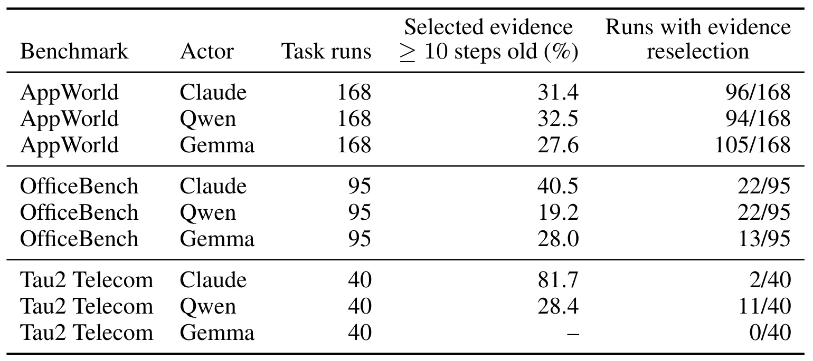
Table 13左侧列基准和Actor，中间是任务总数，倒数第二列是至少十步旧的选择事件比例，最后一列才是发生过证据重选的任务数。AppWorld的Claude、Qwen、Gemma分别有96/168、94/168、105/168次任务发生重选；OfficeBench为22/95、22/95和13/95。Tau2的Claude虽然旧证据事件占81.7%，仅2/40个任务发生重选；Qwen为28.4%和11/40；Gemma甚至没有学习选择事件，所以年龄列是短横线，重选为0/40。这个反例说明高成功并非每次都由旧证据重取驱动，近期窗口、紧凑状态和任务特性也可能够用。原文跨全部任务汇总40.2%有重选，分母包括失败任务，不能写成成功轨迹的40.2%。这些记录证明选择行为确实发生，却没有随机移除同一条重选证据后重跑，无法独立估计每一次重选的因果价值。
表中重选任务数合计为365，三种Actor各运行303个任务，共909次任务运行，365/909约为40.15%，与正文四舍五入的40.2%一致。这个合并是按任务运行加权，与主结果对九个单元等权宏平均不同。若改为平均九行的重选比例，会得到另一数字；两种统计回答的问题不同，复现不能混用。尤其是Tau2的长证据事件比例可能很高但重选任务很少，正是“事件池化”与“任务覆盖”区别的直观例子。
3.3 状态、预测扩展与容量的条件消融
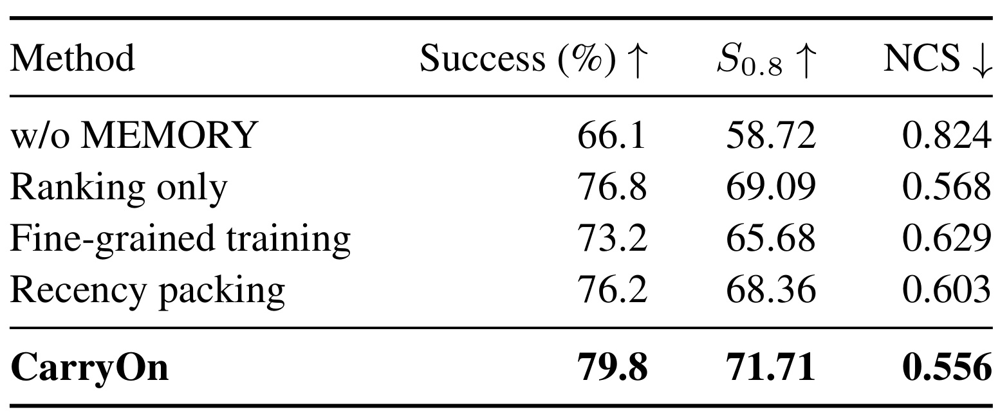
Table 2固定AppWorld和Claude，完整系统成功79.8%、$S_{0.8}$71.71、NCS0.556。去掉控制状态后成功66.1%，是最大退化；仅排序、取消下一动作训练和临时扩展后为76.8%；以细粒度直接使用标签、去掉状态引用标注的训练变体为73.2%；用相同基础预算按最近时间装包为76.2%。表中对比支持控制状态与学习证据选择具有互补作用，但不是把各列差值相加即可得到贡献分解。去掉MEMORY也改变了Actor如何知道剩余义务，排序only同时取消使用预测训练和运行时扩展，细粒度训练同时改变粒度与正例来源。每个变体并非只拨动单一无副作用开关，完整与变体之间的差值应当叫条件消融。完整NCS优于这几个变体，但未报告重复种子和成功差的区间；在同一Actor与基准上有效，也不自动外推到不同API结构或跨用户长会话。
细粒度训练比块级训练差，并不说明细粒度选择本身有害，因为两行在测试时仍读细片段，改变的是训练正例来源及粒度对齐。原方案用完整块是为了与状态引用的标注单位一致，再迁移到片段；另一个变体只由后续API复用标注片段，可能漏掉用于规划但未直接成为参数的证据。这个对照提示训练标签的覆盖与候选粒度要一起看，不能只记住“块比片段好”。同样，按最近时间装包仍然保留控制状态，因而它与无MEMORY不是互斥的一对单模块对照。若想单独量化临时扩展贡献，需要固定同一使用头与标注，只在推理时关闭额外集合，并记录实际超出基础预算的字符量。
从完整到去状态的13.7个百分点差值，对应当前任务集大约少完成23个任务，仍是特定一次运行下的配对差，不是删除状态必然让每个新任务失败的概率。
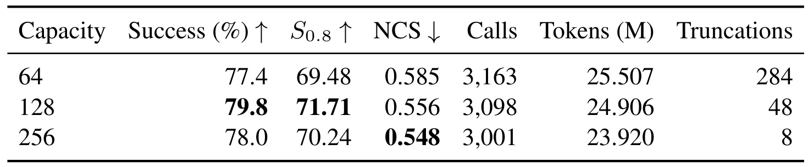
Table 3比较64、128和256代理Token容量，证据预算、选择器和保留策略固定。成功率分别77.4%、79.8%、78.0%，对应全168任务中的130、134、131个成功；$S_{0.8}$依次69.48、71.71、70.24，默认128最好。NCS却从0.585到0.556再到0.548，256最低；调用数3163、3098、3001，Token25.507、24.906、23.920百万，也更偏向较大状态。截断次数284、48、8说明容量确实影响格式保留，但截断是事件次数而非失败任务数，不能用284减48解释多出四个成功。更大状态减少截断、减少重复调用，同时未单调提高成功，可能因状态组织、模型读取与任务波动共同作用。单次评估不支持给所有环境固定128为最优，也不支持将少几个任务视为统计显著下降。这里容量以本地代理Token计算，部署到不同分词器时需要重新测真实输入与字段截断，而非照搬数字。
三行总Token下降还说明容量放大与实际请求长度不是简单同向关系：允许状态多记一点，可能避免更多恢复和重复查询，最终总输入反而更少。但表格只改变了容量，不记录每次状态内容如何不同，尚不足以证明具体哪种字段最值得保留。作者没有在这里找到单调的容量缩放律，因此最稳妥的结论是容量属于需要按任务验证的系统参数，成功、调用与截断应同时检查，而不只选最小NCS。
3.4 精确字段案例与小Actor扩展
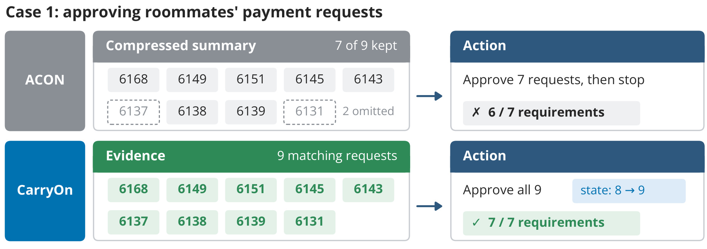
Figure 12是AppWorld与Claude的一个具体任务案例。ACON压缩摘要保留九条请求中的七条，虚线框标出遗漏的6139与6131，后续动作只批准七笔并停止，最终通过七项要求中的六项，即6/7。CarryOn证据集保留九条匹配请求，动作批准全部九笔，状态从八到九，达到7/7要求。图能说明遗漏记录如何与未完成义务相连接，尤其当列表中的每个成员都要执行时，概括成“有一些请求”无法替代完整成员集合。但它是作者选择的失败对照，不是将同一个Actor随机分配不同摘要后多次重复的受控因果实验；两条完整轨迹也可能有其他差异。不能把6/7到7/7写成总体成功提高14.3个百分点，更不能把九笔付款作为本次调研实际执行的外部动作。图内英文任务和动作字段属于原论文示例，原始来源保留让读者能看到缺少的是具体哪两项。
这个案例也区分了记录数量与完成条件数量：九条付款请求不等于九项独立评估条件，官方检查还可能检查筛选规则、金额和最终状态。用请求数量直接构造分母会误读结果。它展示的是完整记录集合能支持覆盖全部目标成员，不能替代对每笔金额、对象和授权的检查。
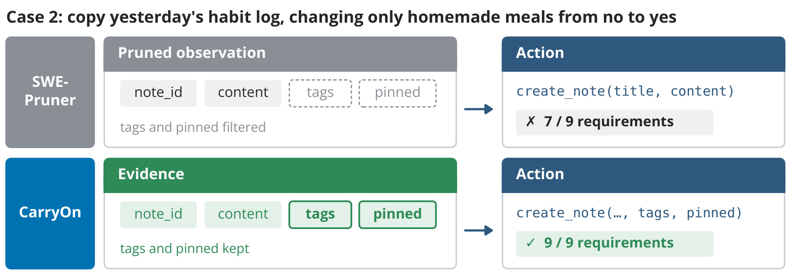
Figure 13换成Gemma上的笔记复制案例，用户要求仅改变某一字段，其余保持原状。SWE-Pruner保留note_id与content，却滤掉tags和pinned，后续创建动作只传标题和内容，最终通过7/9要求；CarryOn仍携带两个元属性，创建动作带上对应参数，达到9/9。它揭示证据单元的好坏不能只看实体或主文本是否在场，默认值、标签、布尔属性和“只改一处”的约束也会决定操作正确性。相似内容可以被抽象为同一主题，接口参数却常不能近似替换。因此细粒度选择需要保留字段间上下文和产生观察的动作，否则碎片离开原结构仍可能被误用。这幅图不能证明CarryOn不会漏字段：只说明本例避免了一个特定剪枝失败，更多字段、嵌套对象与跨记录依赖仍需额外测试。它也提醒不能只用最终返回文本评价工具任务，应核查状态变更是否满足每一项约束。
若字段缺失被系统自动填成默认值，动作可能执行成功但语义仍然错误，因而“工具返回成功”也不等于任务成功。这个边界对复制、迁移和更新型操作尤其重要：修改后的对象需要与原对象逐字段对照，选择器若只优化主内容相似度，会漏掉保留不变属性的要求。
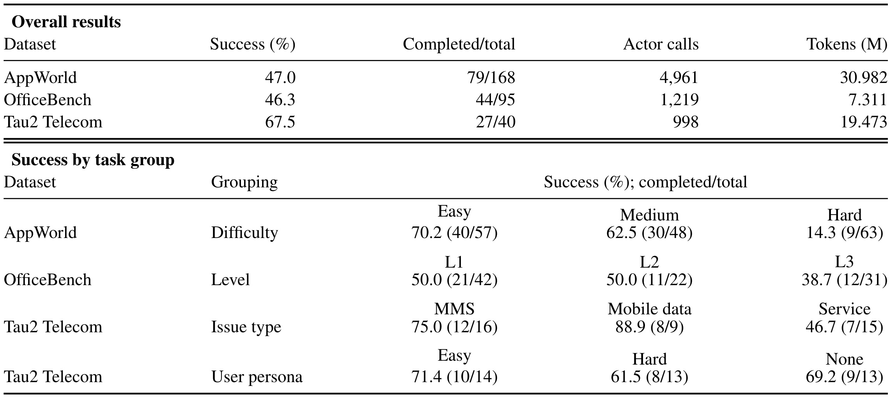
Table 17上半部分报告CarryOn-E的整体结果：AppWorld79/168、47.0%，OfficeBench44/95、46.3%，Tau2为27/40、67.5%；下半部分展开任务组。9B学生在AppWorld简单任务40/57、70.2%，中等30/48、62.5%，困难仅9/63、14.3%；Tau2的MMS为12/16、75.0%，移动数据8/9、88.9%，服务类7/15、46.7%。这些分母使“可本地部署”与“保持27B能力”分开：原27B的三基准成功率84.5%、66.3%、90.0%，学生明显较低。作者报告初始SFT及多轮聚合训练各用一个H100，累计墙钟约54.00、23.06、54.28小时，且不含rollout与教师标注，不能用参数从27B降到9B宣称总成本等比下降。结果支持较小Actor能完成部分任务，并暴露困难与服务类的能力缺口；没有给同尺寸未经蒸馏Actor的完整对照，也未提供不同本地硬件的真实延迟、吞吐或能耗，本轮不把这一表转化为部署容量建议。
细分任务组时还要避免把行相加。Tau2的issue type与user persona是同一批四十任务的两种分组，不能合并成八十个样本；每个比例应连同表中完成数读取。AppWorld困难组只成功九个任务，会显著拖累整体，但本文没有证明这是管理器问题还是9B执行能力不足。管理器被冻结，使它成为比较Actor缩小后能力变化的相对稳定接口，却并未冻结学生的状态字符串或行动轨迹。因此蒸馏后的错误也可能改变后续被选择的证据，不能将全链路差值完全视为纯模型大小效应。
4. 总结
4.1 我的判断与可迁移部分
CarryOn把执行上下文管理拆为三个明确职责：归档保留原始证据，紧凑状态保存任务控制信息，学习选择决定本步读什么。最有说服力的实证组合并非单个总体数字，而是主结果中的成功与成本、旧证据年龄及重选事件、具体字段失败案例一起指向的机制。只有保留来源，暂时不看某条记录才不等于永久忘记；只有把进度与具体值分开，短状态才不必承担全量事实存储。这种组织方式适合跨应用、文档表格和需要精确API参数的工作。
推荐系统可以借鉴可回访事件与压缩状态分层，例如稳定兴趣摘要不覆盖近期具体反馈、行为事件保留时间与来源。但本文的训练标签来自工具动作是否使用证据，不能直接替代推荐相关性、停留或长期满意标签；证据年龄也不是用户兴趣衰减函数。对RAG与长期Agent，值得迁移的是工作集可重新构造和来源可以检查，而不是强行照搬128代理Token与16,384字符。后者取决于环境字段、工具返回规模、模型读取能力与真实分词。
4.2 局限与下一步验证
首先，三个基准都是文本观察，视觉截图、混合模态和嵌套数据需要重新定义单元边界；拆得太细会丢上下文，拆得太粗又退回整步冗余。其次，每基准训练一个选择器，当前实验只证明该环境内跨Actor复用，没有证明新工具接口、领域和任务分布上的泛化。第三，成功训练轨迹和弱负例会遗漏失败恢复需求，离线未来使用标签也依赖原Actor策略，相关但未用的证据可能被误降权。第四，资源指标排除了本地选择器处理Token和部分离线生成成本，不是完整端到端能耗或延迟；归档仍增长，逐步评分的总开销需要随任务长度测量。第五，每设定只有一次运行，40个Tau2任务的差值尤其离散，没有可靠区间就不应写成稳定的线上概率提升。第六，保存原始观察会增加敏感信息留存面，来源引用不是访问授权或事实核验，部署时必须约束读取范围及保存期限。
后续复现应先锁定三类工件：任务/工具schema、原始轨迹与官方评估器、选择器训练标签及状态协议，确保同一个任务成功分母没有被静默过滤。然后在固定基础预算、固定状态容量下，把排序头、使用头、扩展、近期窗口分别做更细的匹配对照，同时记录真实请求Token、归档规模、小模型计算和墙钟时间，避免只在宏平均NCS上排序。最后对高价值字段做有意延迟依赖测试：让较早账号或布尔属性离开工作集后再次需要，核验其可取回性、来源匹配和正确使用，并把恢复成功、错误动作、弃权与重复查询分别统计。小Actor扩展还应有同尺寸基线和总训练预算，确认节省的在线参数是否值得额外教师标注投入。
本文提供的是作者在公开任务环境中的方法与结果证据。本轮没有复跑训练、执行付款或改写任何真实用户数据；匿名代码入口的403也只说明当前访问受限，不能据此断言代码永久不可用。真正的工程验收应同时检查任务成功、精确证据交付与完整资源分母。